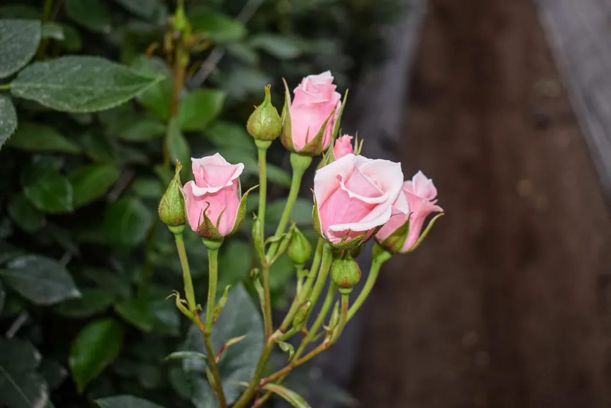

Cómo fotografiar rosas con el celular
Tres cambios pequeños de luz, fondo y distancia para que se vean mejor los pétalos.

Empieza por buscar luz suave. Si tienes la rosa delante y el sol cae directo sobre ella, cambia unos pasos de posición y mira cómo responde el pétalo. Un borde muy iluminado puede perder su textura en la foto. En sombra clara se distinguen mejor las curvas, sobre todo en las flores más pálidas.
Luego mira qué hay detrás. A veces basta con mover el celular un poco hacia la izquierda para ocultar un objeto brillante y conseguir que la flor quede sobre un fondo de hojas. Toca el pétalo en la pantalla para enfocar. Si el teléfono oscurece demasiado el fondo o vuelve blanco el borde del pétalo, ajusta la exposición antes de disparar.
Por último, cambia la distancia. Haz una foto amplia para guardar el lugar, una a la altura del botón para mostrar su forma y una más cercana del detalle que te llamó la atención. Si acercarte hace que pierdas el enfoque, retrocede un poco. Podrás recortar después y conservar mejor el dibujo del pétalo.
Mientras haces las fotos, deja las flores en su sitio y trabaja desde el camino. Al revisar las tres imágenes juntas, pregúntate cuál te devuelve mejor a ese momento. Tal vez sea la del pasillo completo o la de una rosa que, vista tan de cerca, parece distinta a todas las demás.